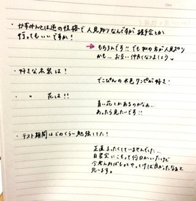
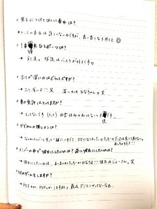
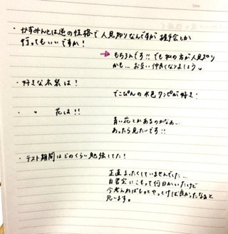

2013/0927Fri（´-`）.｡oO(か ずみん×223
楽天イーグルス、
優勝おめでとうございます！
アメイジング＼(^o^)／
オメイジング＼(^o^)／
今日は大好きなインドカリーを
食べて気分は上々ヽ(´>∀<`*)ﾉ
ろっちー、じょーさん、
なぁちゃん、ひなちゃんと行った♡
ちーちゃんは学校お疲れさまね(´;ω;`)
めっちゃウマいるでした♪♪
昨日の夜はね、
まあやのお家に遊びに行ってね、
まあや初めて人狼ゲームやったの！
そしたらね、
まあや強いの！！！！！
まあやの人狼...見破れなかった´д` ;
愛されまあや、またやろうね♡
まあやがちょっと前に私のこと
沢山ブログに書いてくれて
じぃじ(私)は嬉しかったよ(T_T)
まあや最高愛してる！笑笑笑
いやぁ
愛してるってなんか恥ずかしいね。笑
...キャラじゃないから絶対
口では言えないけど...
らぶ！
みんなも大好きよ( ∩ˇωˇ∩)♡
---------------
さぁ！前回募集しました
質問タ〜イムヽ(´>∀<`*)ﾉ
私の想像以上の質問が届いて
びっくり嬉しかったです(⌒▽⌒)
では、いっきまーす♪
★北海道の食べ物で好きな物は？
→トウモロコシ、サーモン、蟹
あと札幌タイムズスクエア！！
.
.
.
★体重管理でしていることは？
★体重管理でしていることは？
→最近はしてなくて太りました...
反省してます(T_T)
私めっちゃ食べるんですよ！！
.
.
.
★ガッシュベルで、
いちばん感動したところは？
→ゼオンが魔界に帰る所(´;ω;`)
あとキッドが
ミコルオ・マ・ゼガルガ
を放ったとき(T_T)
一番好きなキャラはレイラです♡
.
.
.
★かずみんは肉食系ですか？
草食系ですか？

草食系ですか？
→肉食ではないです((((/*0*)/
魚が好きです！
.
.
.
★かずみんはなんの香水が好きですか？
→最近はディメーターの香水が
変わってて好き♡
ブラウニーとか本物みたいなんです！
.
今までずっと愛用してたのは
廃盤になってしまって...(T_T)
今探してるの(´;ω;`)
.
.
.
★ディズニーの中で一番
好きなキャラクターは？？
→ユニベアちゃん、
モンスターズインクのブー！
.
.
.
★かずみんて髪の毛染めた？
→実は自分で髪の色を抜きました(´`)
学生時代くらいにしようかなと
軽い気持ちでやったら思ったより
明るくなってしまって(´;ω;`)
ただ、意外とメンバーや
スタッフさんから好評で
気に入ってます。笑
.
.
.
★かずみんの応援と受験勉強
どちらに力をそそけばいいですか？
→ええっ>_<
応援してくれるのすごく嬉しいよ！
でも受験で人生が
大きく左右されるよね。
私は待っているので、
勉強頑張って下さい(´;ω;`)
遠くから応援してるよ！
受かったら教えて下さい( ∩ˇωˇ∩)
.
.
.
★かずみん推しは正式に
『ポジティ部員』と
名乗ってよいですか？
→はい！！もちろんっ♡
高山推しの方は
即入部となります( *´艸｀)
.
.
.
★最近Availには行かないんですか？
→けっこう行ってます。笑
前回の個別で着たスカートも
アベイルよ〜(￣▽￣)
.
.
.
★かずみんが最近始めたいことは？
→勉強かな！
久しぶりに陽菜ちゃんの
数学プリントを
やらせてもらったら
けっこう忘れてて
ショックだった(T_T)
脳の衰えは悲しいです...
国語と社会は元から苦手だから
いいんだけどねσ(ﾟ∀ﾟ*)
数学と英語やりたい！
.
.
.
.
.
ノートにも書いてみた！

私字が汚くてやだーと悲しんでたら
ちーちゃんが質問を書くのを
ちょっと手伝ってくれました(*´ｰ`*人)
どれかわかるかなぁ？？

↑これは私がちょっと太いペンで
書いた見にくい字です...
色々試行錯誤しました！笑
久しぶりなもんですみません(ﾉ;ω;)ﾉ
読めるかなぁ>_<？？
今日はここまで(*´ｰ`*人)
質問してくださったみなさん、
ありがとうございました！！
順にちょっとずつだけど
返して行きますね〜(っ*´x`)っ
不器用でごめんなさいね(T_T)
ではでは！！
今日もお疲れ様でした！
2013/09/27 00:12


コメント(523)
クライマックスシリーズでは鷲を鴎が叩き落させていただきますよ。（笑）
もうすこしで代々木ですな!!
体調にきおつけて頑張ってね!(^^)!
相変わらず
ひなぁぁぁぁぁぁぁぁぁぁぁあ
となかよすなんだな(o'ー'o)
ファンサービスが素敵すぎる！
かずみん大好き(o^∀^o)
こんばんわヽ(￣▽￣)ノ
こんばんは♪
インドカリー美味しそう！
かずみんに見事に飯テロされた(笑)
明日も頑張ってください(^-^)/
では、お休みなさい(-.-)Zzz・・・・
合宿で
みんなでやったのは思い出！
うまそー
人狼むずいよなー
じぃじってww
さすが乃木坂効果w
次も奇跡起こしてなー！
好きだーー！！
インドカリーって食べた事無いんだよね…
質問返しお疲れ様!!
へばっまずな(^-^)/~~
お疲れさまです！
楽天凄いですね！！
つか、巨人も優勝しましたよーーー(´Д` )
俺巨人ふぁんなんで…
巨人も祝ってくださいよーーー
まぁー君凄いですよねー
連勝記録。かっこいいーなー
かずみちゃんもビール掛けとかしてみたいですか？笑
かずみん、お疲れさま♡♡
インドカリーいいなっ♪
かずみん、辛いの得意だから、辛口かな？！
そして、おかわ♡
なんか大人っぽくなったね☆ミ
質問答えてくれてありがとう！
大変だったでしょ？？
続編でわたしの質問に答えてもらえるように、祈っとく( *｀ω´)笑
日曜日の名古屋個握、楽しみにしてます♡
かずみん、だーいすきっ(((o(*ﾟ▽ﾟ*)o)))
びっくりしたわー
ここで、質問！
かずみんは、七瀬のどいやさんみたいな自分のキャラクター作らへんのー？
てか、作ってやー！
作ったら、毎回ブログの最後とかに載せてよー(笑)
んじゃ、この辺でおやずみ、かずみん(^O^)／
優勝セールが楽しみだね♪
自分の質問が出てくるかドキドキしてる(笑)
質問返し楽しみにしてるね(^ω^)
いよいよ、代々木が近づいてきたね。
凄く楽しみ(^_^)
幕張の握手会も行くよ。
で、楽天優勝ですね～。誕生から９年・・私は直接ファンと言う事でもないですが、東北に初めてできたプロ野球チームが優勝ですからね～。この勢いで是非日本一になってほしいですね！！
で、ちーちゃんが書いた部分って・・分からないなぁ～。
なんとなく「ホリが～」って、ところかな？
では。またね！！甘ちゃん！！
せーの バケラッタ
俺もキッドの最期の場面は大好きですよ。
感動ですよねo(TωT)o
早く個握で会いたいです！
2〜4部に行きますね！
乃木坂パワーかもね(^-^)
アメイジング
ナンめちゃくちゃ大きいね(笑)
おいしそう
明日もポジティブに頑張ろう
おやすみなさい
質問返し！
あらためてかずみんしれていいわ♪
ゆっくりでいいからいろいろ教えてね♪
いつもお疲れ様です！
人狼ゲームおもしろいですよね♪
いっぱい食べることはいいと思いますよ(^^)？
ガッシュは泣けますよねo(T△T=T△T)o
これからも体調には気をつけてくださいね
いつでもどこでも応援しています。
hiroya
手書きでも気持ち伝わるから下手とか関係ないよ♡
かずみんのことをもっと知れて嬉しいよ～
ずっとボジティ部部員です☆
ポジティブSAY!
かずみんかわいい〜
オメイジングは初めて聴きました。
それだけ凄いことが起こったんですね。
楽天が優勝で被災地でまーくんが世界記録作って、乃木坂が盛り上げてＣＭやって、まいやんが始球式して。
めでたいですね。楽天セールしないのかな？楽しみですが。
人狼ゲーム流行ってますね。愛されまあやが強いのが意外ですね。
毎回チェックしてないですけど、コメントがちゃんと載っているか不安です。最近結構、『投稿』を押しても送りすぎってエラー出るんですよねー。
では、質問が返し頑張ってくださいませ。
それではまた次回。
かずみんの質問返し新鮮ですね！！
それに手書きっていうのに感動しました(´；ω；`)
かなり綺麗な字ですね!!
自分も今年は受験なので来年まで待っててくださいw！
これからもお仕事がんばってください(*^^*)
マーくんが凄すぎです(´ｰ｀)
愛する中日がダメだったので
今年の野球は終了｡ﾟ(ﾟ´Д｀ﾟ)ﾟ｡
あはぁ（＾◇＾）
楽天イーグルス、優勝したね。最後のマー君の連続三振はすごかったね
TVの前に釘付けやったわ。まさにアメイジングやね
インドカレー美味しいよね、カレーそのものも美味しいけど、ナンも好き。
じゃあ、今週もポジティブでね。
ゼオン(´；ω；`)
キッド(´；ω；`)
ガッシュは感動するとこありすぎてなかなか一番決められへんよな(>_<)
大阪住みやけど名古屋行くよー！
握手会近づいてきたからソワソワしてきた！
明日も一日頑張ろうー！！
ほなね( ・∇・)ﾉ
楽天優勝しましたね！！！
僕は楽天ファンなので、昨日はめっちゃ嬉しかった＼(^o^)／
この優勝は乃木坂46の皆さんが応援してくれたおかげかな！！！
今日はこの辺で(o^^o)
おやすみなさいm(_ _)m
僕は最初の方のコルルのところが感動しちゃいましたね(/_;)
でもガッシュって感動シーンたくさんあるマンガだと改めて思いました＼(^o^)／
あ、今回の写真の私服も可愛いです！
どこのお店なのー？
寒くなってきたから風邪に注意してねー！
バケラッタ(*･ω･)ﾉ
楽天おめでたい！！＼(^o^)／
テレビで応援してました！
かずみんも応援してた？
質問たくさん来ててすごいね！(ﾟДﾟ)
少しずつでいいからねぇー(^_^)v
では！(｡･･)
気が向いたら質問かえしてね！
ナンの写真見てたら
”なん”だかナンが食べたくなってきたー！！！
明日食べに行くしか！！！ｗｗｗ
質問返しお疲れ！！！
直筆はやっぱり気持ちがこもってて嬉しいね！！！
そういや
やっぱり髪の色変えたんだね！？
この前の握手会は行けてないんだけど
その噂を知って少し気になってたから
かずみんのブログで真相が知れてよかったです！！！
黒髪かずみんを見てきた自分としては
少しショックな気がしましたが
似合っちゃってるので
こっちもありカナ！？
っなんて思っちゃってますｗｗｗ
今度の握手会で見るのが楽しみです！！！
っていうか
ライブで見れるから
そのとき見ます！！！ｗｗｗ
楽天優勝したね！！
誠にオメイジング！！！
ではでは
hayato・たまご・スマイルマンでした♪
楽天優勝したねぇ～
乃木坂もお世話になってるし
めでたいｗ
インドカレー美味しいよねぇ～
とか言ってインドカレーを最後に食べたのは
1年半位前だろうかｗ
知り合いの舞台観に行った時に食べたなぁ～
舞台と言ってもインドカレー屋さんの中でやってたんだけども
ディナーショー風？
んで、色々な質問あるねぇ
取りあえず・・・黒髪が好きです←
アメイジング＼(^o^)／
いつも勉強の合間にかずみんを見て
心を和らげてます！
かずみんを見るとなんか明るなる。
いつもありがとね‼︎
質問。
驚いた時はアメージング、
じゃあ頑張ろうって時は何て言う？
まずは、インドカレー美味しそう
インドカレーってなかなか食べないので、
久しぶりに食べてみよ☆
てか、かずみんのブログのコメント数が遅く
なる呪いのせいで、いままで遅かったけど、
今回は、どうだ！？
そ、そ、それと…
質問が選ばれなかった
でもでも、次に選ばれるかもしれないと
ポジティブな方向に持っていきます
なので、もう一回質問やってー
お願い(。>д<)
ではでは
あーーめーーいーーじーーんーーぐーー！！
あと昨日カープも16年振りにＡクラスなのもこの場をお借りしてオメイジング＼(^o^)／
コメントする